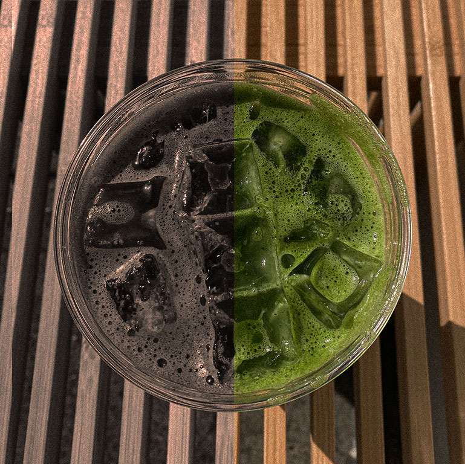
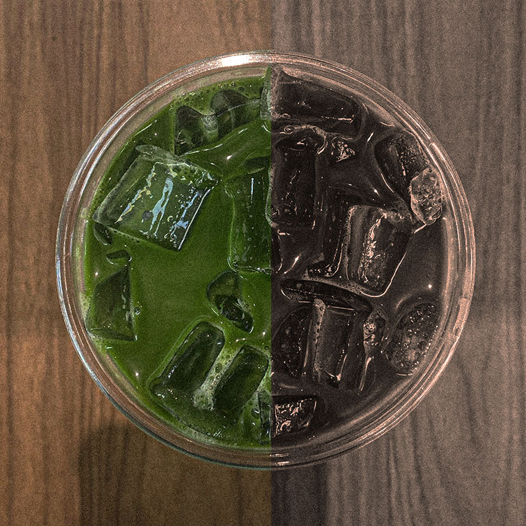
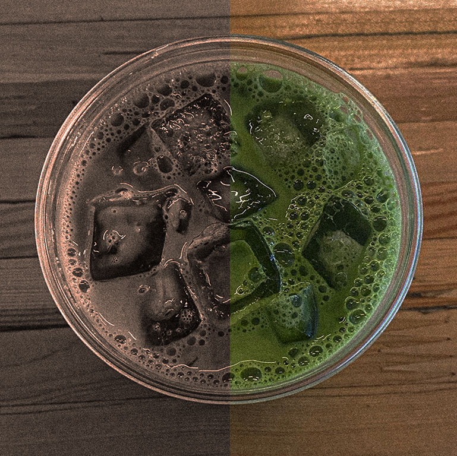
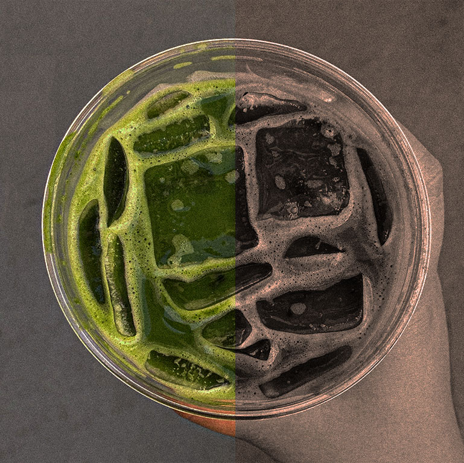
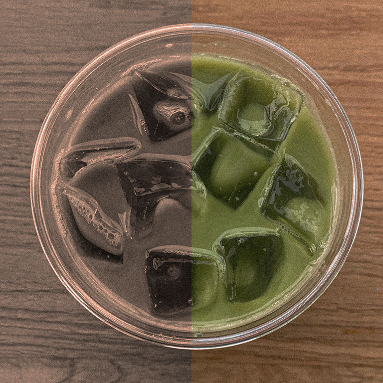
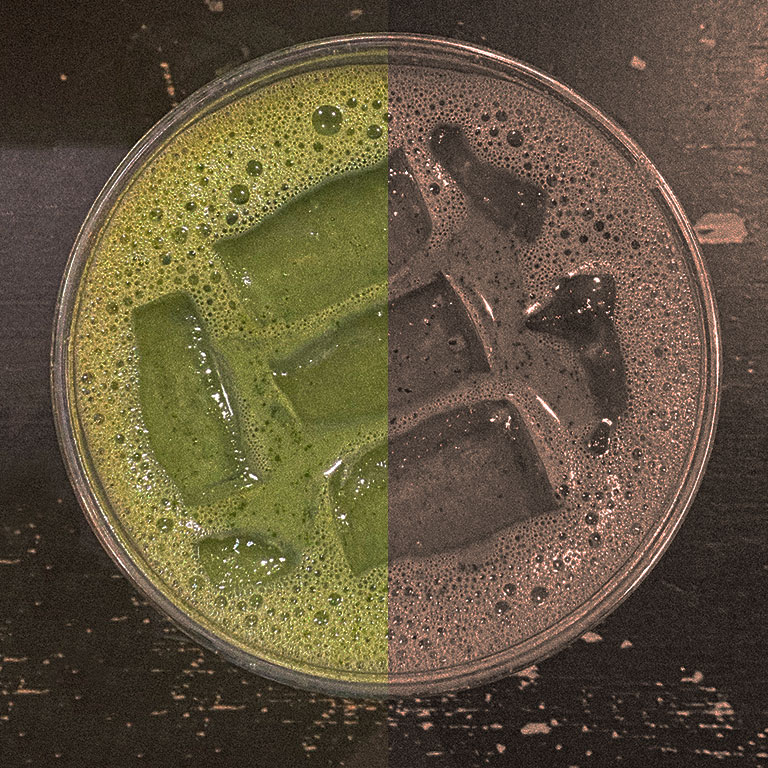

The Quest
Finding the BEST iced oatmilk matcha latte in San Francisco
The matcha latte, an up and coming caffeinated drink that won’t get you crazy anxious. Some say that it taste like grass, I’m here to prove them wrong. The best way to drink matcha is iced, with oat milk (plus it’s lactose intolerant friendly). Here, I present my reviews and ratings for the best iced oat milk matcha latte based on location, price, ambiance, flavor, texture, and more.
Matcha Shop Reviews
Reviews based on, and prioritized first by: Flavor, Texture, Price, Location, and Ambiance

#1 ~ Has the best flavor and value for an Iced Oatmilk Matcha Latte
Kiss of Matcha
Maruwu Seicha

#2 ~ Has one of the best flavor and value for an Iced Oatmilk Matcha Latte, but a long wait time

#3 ~ Has a standard matcha flavor, mid-value for an Iced Oatmilk Matcha Latte and great ambiance
Stonemill Matcha
Asha Tea House

#4 ~ Has a mild matcha flavor and good value for an Iced Oatmilk Matcha Latte

#5 ~ Has a unique and uncommon matcha flavor, and mid-value for an Iced Oatmilk Matcha Latte
fifty/fifty
Matcha Cafe Maiko

#6 ~ Has a mild matcha flavor and is very sweet, and a mid-value for an Iced Oatmilk Matcha Latte